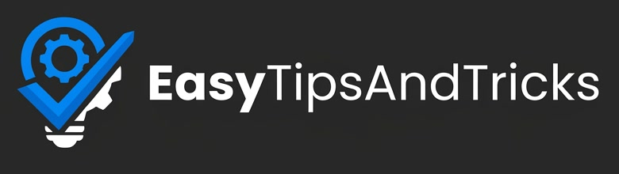

Privacy policy
Last updated: 11 November 2026
EasyTips Studio ("the app") is a private tool used by one person, the owner of the EasyTipsAndTricks YouTube channel, to manage that channel. It is not offered to the public.
What the app accesses
When the owner signs in with Google, the app asks for permission to use the YouTube Data API on the owner's own channel (scopes youtube, youtube.upload and youtube.force-ssl). It uses this only to:
- upload the owner's own videos as private or scheduled videos, and set their titles, descriptions, tags, thumbnails and captions;
- add videos to the owner's playlists;
- read the owner's own videos, playlists and public view counts to keep a catalog of the channel.
What is stored, and where
- The Google sign-in token is stored only on the owner's computer, in a private file readable only by the owner. It is never uploaded anywhere or shared.
- A catalog of the channel's own videos (titles, IDs, dates and view counts) is kept in the owner's private files.
- The app does not collect, store or process data about viewers or any other Google users.
Sharing
The app does not sell, share or transfer any data to third parties, and does not use it for advertising. Google user data is used only to provide the features listed above, in line with the Google API Services User Data Policy, including its Limited Use requirements, and the YouTube Terms of Service.
Removing access
The owner can revoke the app's access at any time at myaccount.google.com/permissions. Deleting the token file on the owner's computer also removes the app's access. See also the Google Privacy Policy.
Children
The channel publishes some videos made for kids. The app does not collect personal information from children or any viewers.